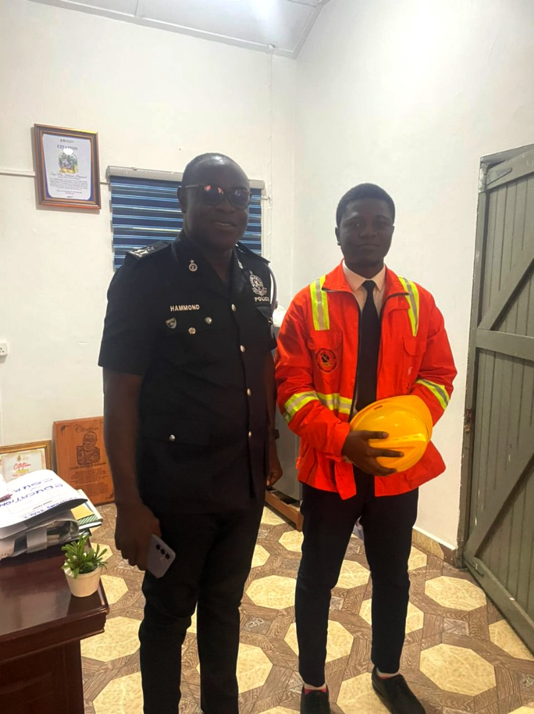

About Me
OSEI ASIBE KWABENA BAAH-ACHEAMFUOR
I am a visionary leader with integrity, empathy and wisdom. I inspire trust, foster unity and drive inclusive progress. I possess political acumen, diplomatic savvy and a deep understanding of diverse perspectives. I champion justice, equality and sustainable development, empowering a brighter future for all.
Policies
ADWUMA NKOAA POLICIES
1. Solar Power Project
This project is set to provide uninterruptible power supply to reading rooms at various colleges, halls and on-campus hostels. Taking such action will cater for study interruptions caused by power outages while also employing clean energy measures and contributing to SDG 7 Clean Energy.
2. School Shuttle Expansion and Extension
The implementation of this project is targeted at increasing the number of shuttles and also extends the routes of the students’ shuttle system to areas such as Bomso, Ayeduase, Kotei, etc. This further enhances students’ security as they commute from campus to their various residence on and off-campus improving accessibility and safety.
3. Off-Campus Internet Accessibility Policy (Information Technology)
Improve internet connectivity for students living off-campus. Partnerships with appropriate internet service providers will be made to expand KNUST’s internet coverage for the benefit of students residing in select residencies outside campus. In making such provision, students can enjoy online classes and other scholarly engagements at the comfort of their hostels and nearby residence.
4. "EntrePrize" Initiative (Entrepreneurship)
The ENTREPRIZE initiative focuses on creating a platform for community leaders, social entrepreneurs, and innovators aligned with global goals (SDGs) and the African Union Agenda 2063. This initiative promotes ingenuities that contribute positively to societal development through entrepreneurial and innovative endeavors.
5. Student Clinic Expansion and Staffing Agenda (Health)
We, as students of KNUST are privileged with a student clinic managed by the University Hospital. Reports have it that the clinic lacks appropriate staff often leading to delays in receiving immediate and quality healthcare. In achieving this action plan, the student clinic will be expanded to accommodate plenty invalids and have experienced health workers man the facility.
6. Extended Library Hours (Academic Enhancement)
Advocate for the extension of the operating hours of campus libraries to provide students with more study time. This is to enables students to access library resources beyond regular hours, supporting academic success and exam preparation.
7. See Something, Say Something (Security Initiative)
To better security issues and tackle the roots of theft and criminal activities cases reporting must be prioritized. With this initiative, appropriate communication lines will be listed for criminal and accident issues on campus directly connected to the University Security Service and the Ghana Police Service ensuring rapid response to health, fire and criminal emergencies.

8. Deo Juvante Tutorials (Academic Enhancement)
The objective of this initiative is to support students struggling with challenging courses by offering targeted study sessions. Various faculties will hold tutorials and study sessions focusing on commonly failed courses to improve academic performance and help students prepare for supplementary exams.
Facilities:
Based on the projects, policies and initiatives above, the following facilities will be established.
1. Solar Panels for Reading Rooms
2. Hospital Block
3. Mounting of Wi-Fi Routers
4. Health, Fire and Crime Report System
Contact
Get in touch with me.
- Email: obaahacheamfuor@gmail.com
- Phone: 0506039327